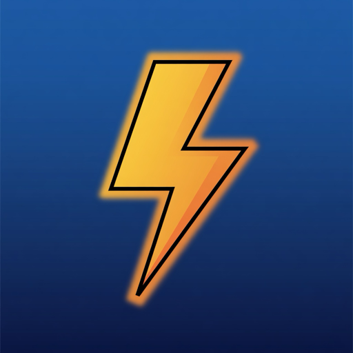

中文名:回忆游戏厅
Flash Player is gone, but the games don’t have to be. Six browser classics of the 2000s, rebuilt from scratch for one-hand touch play. Free, plays offline, no paywall.
Download for iOSIf you grew up in the 2000s, you remember the browser arcade: a swinging claw hauling gold out of the dirt, a board of tiles you connected two at a time, a tower you climbed floor by floor counting keys and potions, a dare to descend a hundred floors without falling, a bubble cannon aimed at a closing ceiling. Then Adobe shut down Flash Player at the end of 2020, and the whole arcade went dark overnight.
Flash Arcade brings that memory back — not by emulating old .swf files, but by rebuilding the classics from scratch as native iPhone games. Every game was redesigned for one-hand touch play: no virtual mouse, no virtual keyboard, just your thumb. Play a full round in a ten-minute commute, or lose an evening to the tower climb.
Beyond the six playable games, browse a hand-illustrated catalog of the era’s other classics. Search by a half-remembered detail, mark the ones you used to play, and vote for which cabinet gets uncovered next.
Each one a from-scratch tribute to a flash-era classic.
The gold-miner claw game. Time the swing, drop the claw, and see what you haul up — gold, rocks, or a very heavy pig.
The mahjong-connect puzzle. Link two matching tiles along an open path before the clock runs out.
The floor-by-floor tower dungeon. Manage keys, potions, and monster math one room at a time — every fight is a calculation.
The “go down 100 floors” dare. Hold left or right and dodge your way down — spikes above, platforms below, no second chances.
The bubble shooter. Aim, bounce, and clear the board before the ceiling closes in.
A one-lane night drive. One thumb, oncoming headlights, and however far you can keep going.
Not the original .swf files — Adobe shut down Flash Player at the end of 2020, and iPhones never supported it in the first place. Flash Arcade takes a different route: it rebuilds the classic flash-era games from scratch as native iPhone games, redesigned for touch, so they play better than emulation ever could.
Six complete games at launch: the gold-miner claw game, the mahjong-connect tile puzzle, the floor-by-floor tower dungeon, the 100-floor descent, the bubble shooter, and a lonely night highway. More cabinets are uncovered in future free updates.
Yes. Every game is fully playable with no in-app purchases and no paywall. A single banner ad sits in its own strip below the play area — that is what keeps the games free.
No — the originals are gone with Flash Player. Every game here is an original tribute rebuilt from scratch for one-hand touch play. If you remember the originals, you’ll feel at home in the first five seconds.
Yes. Every game is fully playable in airplane mode. Only the wish-list vote counter and the ads need a connection.
Yes — vote in the wish list (许愿池) on the home screen. A motorcycle racer and a soccer brawler are already waiting on votes. The totals genuinely decide what gets built next.
Yes. The app is fully bilingual — English and Simplified Chinese (中文名:回忆游戏厅) — switchable anytime from the home screen.